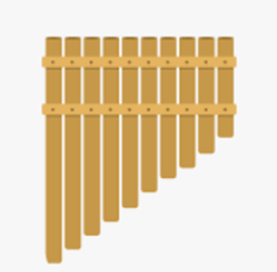

Instrument Project
Students: MUSG 102 World Music students
Mentors: Travis Silvers (Musics, MJC)
Problem: To explore the construction, tuning and preformance of handmade instruments
Solution: Each student will build one instrument from the following instrument families: chordophones, idiophones, aerophones, membranophones
Instrument goal 1: Drum.

Instrument goal 2: Flute.

Instrument goal 3: Pan Pipes.

Instrument goal 4: Lute.